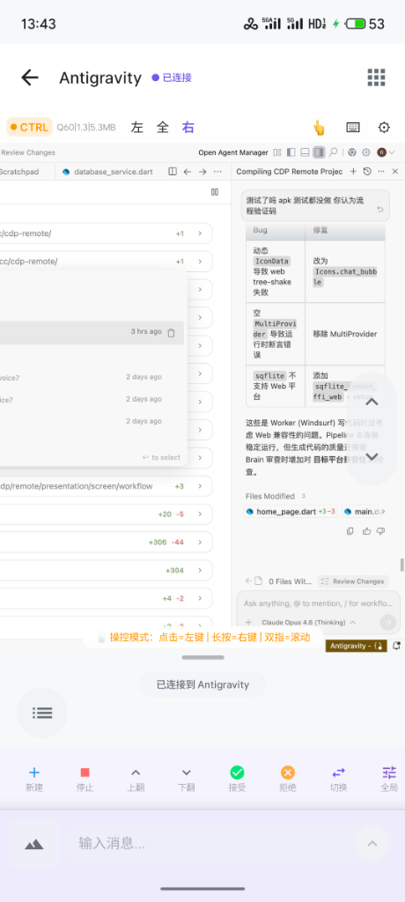
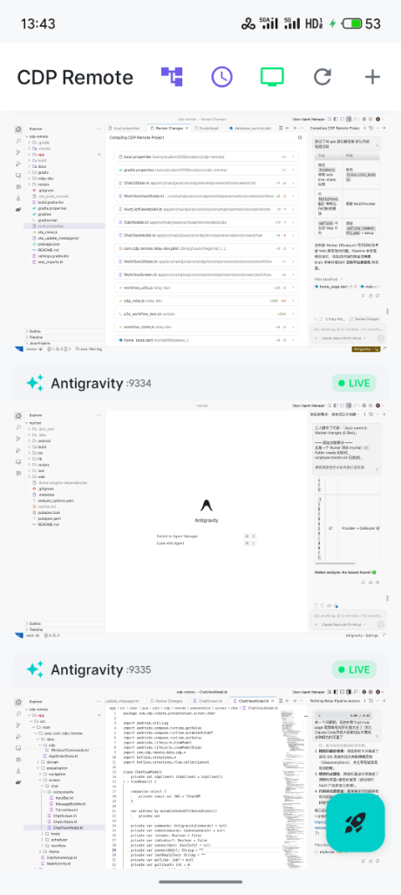
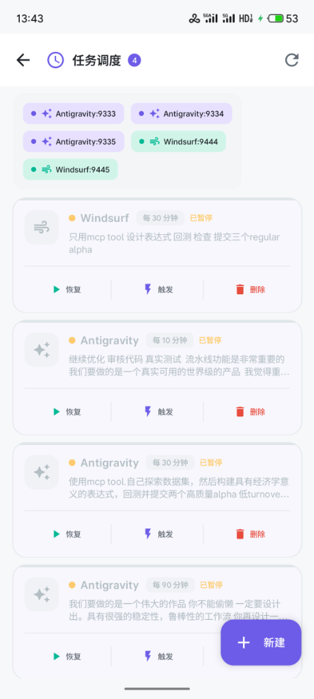
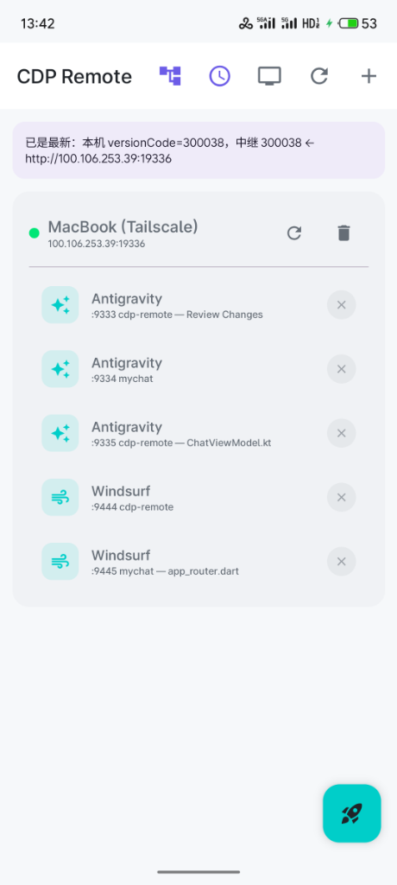

将本地 IDE 装进口袋
随时随地开启硬核编码。基于 Chrome DevTools Protocol，将你的 Cursor、Windsurf、Codex、Antigravity 画面无缝实时串流到安卓手机。
function connectRelay() {
const ws = new WebSocket('ws://relay:19336');
ws.onmessage = (event) => {
// Render high-quality IDE stream
renderStream(event.data);
};
}
真实场景实机演示
多实例无缝切换，沉浸式代码审查与自动化流水线管理。




极客专属的操控体验
抛弃臃肿的远控软件，专为开发者打造的沉浸式编码环境。
沉浸式精准触控
原生级别的多指手势支持，点哪打哪的直接触控模式，或随时切换为虚拟光标，精准定位每一个代码字符。
智能键盘避让
当手机原生键盘弹出时，IDE 画面智能计算 Y 轴平移，确保输入光标永远可见且画面不缩水。
零死角工具栏
将高密度 UI 工具栏完全独立于代码画面之外，彻底告别悬浮窗遮挡，释放 100% 屏幕空间。
毫秒级无损串流
WebSocket 图像差异化传输协议，弱网环境也能保持丝滑高帧率，让你感受不到远程的延迟。
只需两步，开启全平台办公
服务端（电脑）
无需繁杂配置，无需注册账号，一条命令全局安装中继服务。
npm install -g github:student2028/cdp-remote
cdp-relay🔥 进阶：如何让它在后台静默运行且死掉自动复活？
使用 PM2 守护进程，关闭终端也不会断连，开机自动启动：
npm install -g pm2
pm2 start cdp-relay --name "cdp-server"
pm2 save && pm2 startup客户端（手机）
直接下载 APK，或者极客一点，连上数据线使用 ADB 一键安装。
curl -L -o /tmp/cdp-remote.apk https://github.com/student2028/cdp-remote/releases/download/v1.0.0/CdpRemote-debug.apk
adb install -r /tmp/cdp-remote.apk连接与使用（开始起飞）
装好之后怎么玩？非常简单：
⚠️ 最重要的一点：网络连通性
手机和电脑必须在同一个局域网内！
- 在家/公司： 连上同一个 Wi-Fi 即可。
- 出门在外（真正的随时随地）： 强烈建议在电脑和手机上都安装 Tailscale，组建虚拟局域网。这样就算你在地铁上，也能用 4G/5G 连上家里的电脑！
- 输入地址：打开手机 APP，输入电脑端显示的 IP 地址和端口（如果是 Tailscale，请输入类似
100.106.x.x:19336的地址），点击连接。 - 选择 IDE：连接成功后，APP 会列出你电脑上所有打开的 Cursor/Windsurf 窗口，点击你想操控的那个。
🎮 核心操作：实时监控 vs 沉浸操控
刚点进画面时默认是 ● LIVE (实时模式)，只能看不能动，防止误触代码。
当你需要写代码或操作时：
点击左上角的 LIVE 徽章，它会立刻变成 ● CTRL (控制模式)！此时你就可以随意滑动、点击、呼出键盘打字了。